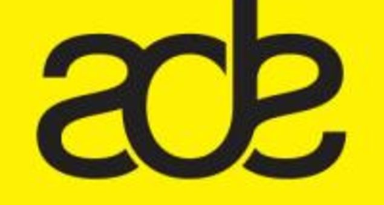

ITM goes to ADE! Hawtin, Kleinenberg, Voorn, Armin & more


The Amsterdam Dance Event (ADE) returned last month, proving again why it’s acclaimed as the world’s best electronic music conference, and this year inthemix was there to sample all the industry (and party) action, rocking up to check out the panels as well as sampling some of the many star-studded event that happened across Amsterdam over the course of the conference.
You might have already read our tidy little interview with Armin van Buuren where he confirmed ‘Armin Only’ would return in 2010, but this was only the tip of the iceberg as our roving reporter Katrina Loughrey was kept busy speaking to some of dance music’s biggest and brightest names. Check out our coverage so far…
Richie Hawtin audio interview.
Joris Voorn audio interview.
Sander Kleinenberg audio interview.
MDX audio interview
Founded fourteen years ago, ADE was originally a humble gathering of a few hundred music professionals, as well as a few parties across a couple of different clubs, but since then it’s expanded to become the ultimate platform to business networking and staying abreast of new music and trends. Amazingly, ADE now attracts 2,000 delegates from 42 countries, over 700 DJs and live acts across 44 venues, and around 150 journalists and media outlets!
Want more excellent ADE coverage? Check out ITM’s Festival Page for interviews, DJ mixes, photos and more.
See our Snap! featured gallery of the 2009 ADE conference here, with pics from the many panels, networking events and of course the parties, including Faithless, Paul van Dyk, David Guetta, Derrick May and more.
> ADE 2009 – The Conference & The Parties
Wondering who else ITM’s reporter Katrina Loughrey got to hook up with throughout the week at ADE? See the gallery of her intrepid travels interviewing some of the world’s biggest names in dance music right here!
> inthemix ADE interview schedule